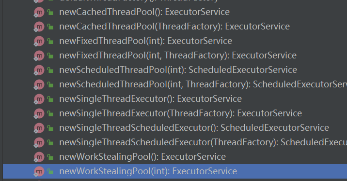
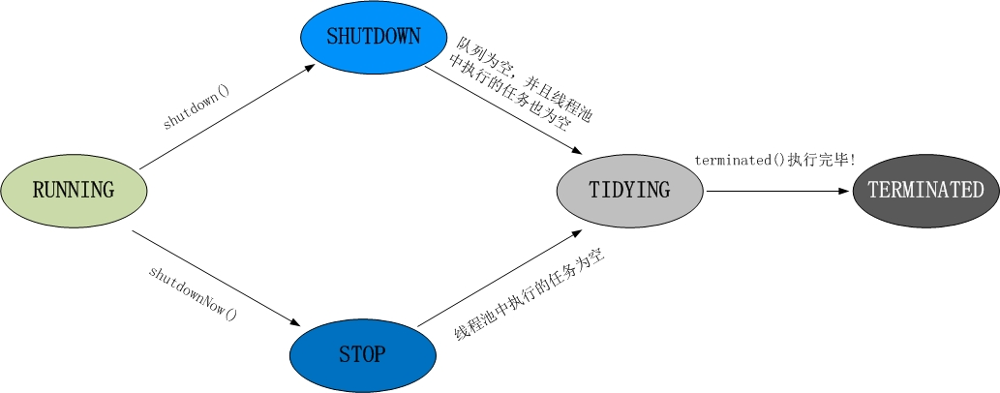
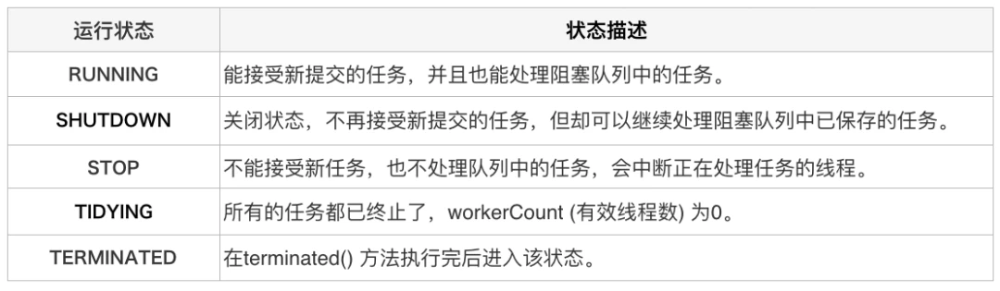
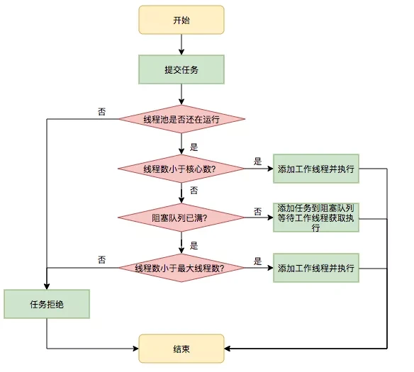
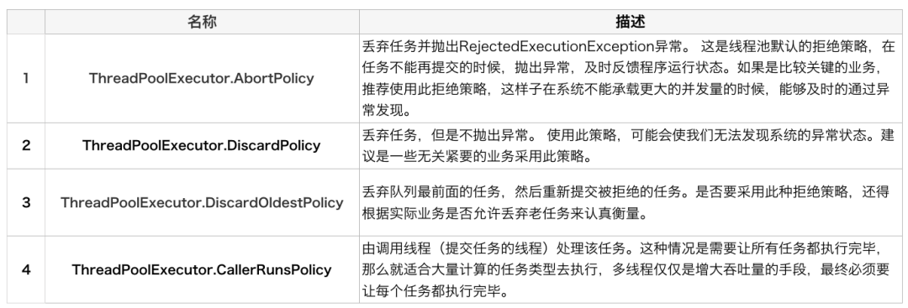

线程池基础知识。
线程池基础知识
为什么使用线程池
线程是不能够重复启动的，创建或销毁线程存在一定的开销，所以利用线程池技术来提高系统资源利用效率，并简化线程管理。创建一个线程，需要调用操作系统内核的 API，然后操作系统要为线程分配一系列的资源，这个成本就很高了，所以线程是一个重量级的对象，应该避免频繁创建和销毁。那应该怎样创建线程呢？你应该立刻想到了用线程池。利用线程池把资源池化，使得线程资源能复用，可以避免频繁地创建和销毁。
线程池
Executors 目前提供了 5 种不同的线程池创建配置：

Executors 目前提供了 5 种不同的线程池创建配置：
newCachedThreadPool()，它是一种用来处理大量短时间工作任务的线程池，具有几个鲜明特点：它会试图缓存线程并重用，当无缓存线程可用时，就会创建新的工作线程；如果线程闲置的时间超过 60 秒，则被终止并移出缓存；长时间闲置时，这种线程池，不会消耗什么资源。其内部使用 SynchronousQueue 作为工作队列。
newFixedThreadPool(int nThreads)，重用指定数目（nThreads）的线程，其背后使用的是无界的工作队列，任何时候最多有 nThreads 个工作线程是活动的。这意味着，如果任务数量超过了活动队列数目，将在工作队列中等待空闲线程出现；如果有工作线程退出，将会有新的工作线程被创建，以补足指定的数目 nThreads。
newFixedThreadPool中核心线程数和最大线程数相等，因为使用的是无界队列，所以最大线程数就失去了意义。因为核心线程数与最大线程数相等，不会有线程消亡，所以keepAliveTime会设置成0。
newSingleThreadExecutor()，它的特点在于工作线程数目被限制为 1，操作一个无界的工作队列，所以它保证了所有任务的都是被顺序执行，最多会有一个任务处于活动状态，并且不允许使用者改动线程池实例，因此可以避免其改变线程数目。
newSingleThreadScheduledExecutor() 和 newScheduledThreadPool(int corePoolSize)，创建的是个 ScheduledExecutorService，可以进行定时或周期性的工作调度，区别在于单一工作线程还是多个工作线程。
newWorkStealingPool(int parallelism)，这是一个经常被人忽略的线程池，Java 8 才加入这个创建方法，其内部会构建ForkJoinPool，利用Work-Stealing算法，并行地处理任务，不保证处理顺序。
submit和execute
- execute接收的是Runnable参数，无返回值
- submit既可接收Runnable参数又可接收Callable参数，返回值为Future。方便Exception处理
线程池各个状态之间的切换如下图所示：


线程池任务调度

拒绝策略

ThreadPoolTaskExecutor
ThreadPoolTaskExecutor是Spring基于java本身的线程池ThreadPoolExecutor做的二次封装，主要目的还是为了更加方便的在spring框架体系中使用线程池。
@Configuration
@EnableAsync
public class TaskPoolConfig {
@Bean("syncExecutorPool")
public Executor taskExecutor() {
ThreadPoolTaskExecutor taskExecutor = new ThreadPoolTaskExecutor();
// 核心池大小
taskExecutor.setCorePoolSize(5);
// 最大线程数
taskExecutor.setMaxPoolSize(10);
// 队列程度
taskExecutor.setQueueCapacity(100);
// 线程空闲时间
taskExecutor.setKeepAliveSeconds(60);
// 线程前缀名称
taskExecutor.setThreadNamePrefix("syncExecutor--");
// 该方法用来设置 线程池关闭 的时候 等待 所有任务都完成后，再继续 销毁 其他的 Bean，
// 这样这些 异步任务 的 销毁 就会先于 数据库连接池对象 的销毁。
taskExecutor.setWaitForTasksToCompleteOnShutdown(true);
// 任务的等待时间 如果超过这个时间还没有销毁就 强制销毁，以确保应用最后能够被关闭，而不是阻塞住。
taskExecutor.setAwaitTerminationSeconds(300);
// 线程不够用时由调用的线程处理该任务
taskExecutor.setRejectedExecutionHandler(new ThreadPoolExecutor.CallerRunsPolicy());
//交给spring托管的会自动初始化，因为实现了InitializingBean接口
//taskExecutor.initialize()
executor.setTaskDecorator(new ContextCopyingDecorator());
return taskExecutor;
}
}TaskDecorator
工作中经常遇到需要处理子线程与主线程间数据传递的问题。这时候我们就用到了TaskDecorator
@Slf4j
public class ContextCopyingDecorator implements TaskDecorator {
@Override
public Runnable decorate(Runnable runnable) {
//获取主线程中设置的 user对象
Object user = ThreadLocalUtil.get(ThreadLocalUtil.USER_KEY).orElse(null);
return () -> {
try {
//把user对象重新copy传递给子线程
if (user != null) {
ThreadLocalUtil.set(ThreadLocalUtil.USER_KEY, user);
}
runnable.run();
} finally {
ThreadLocalUtil.remove();
}
};
}
}
public class ThreadLocalUtil {
public static final String USER_KEY = "user";
private static final ThreadLocal<Map <String, Object>> THREAD_LOCAL = ThreadLocal.withInitial(() -> new HashMap <>(4));
public static Optional<Object> get(String key) {
return Optional.ofNullable(THREAD_LOCAL.get().get(key));
}
public static void set(String key, Object obj) {
THREAD_LOCAL.get().put(key, obj);
}
public static void remove() {
THREAD_LOCAL.remove();
}
}通过ContextCopyingDecorator实现了接口TaskDecorator，在Runnable decorate(Runnable runnable)方法中，实现了Threadlocal线程本地变量在线程间的传递。
其中，ContextCopyingDecorator中的finally必须得加，这里是子线程执行完毕后，清理threadlocal，防止内存泄漏
线程池在业务中的实践
快速响应用户请求
- 用户发起的实时请求，服务追求响应时间。比如说用户要查看一个商品的信息，那么我们需要将商品维度的一系列信息如商品的价格、优惠、库存、图片等等聚合起来，展示给用户
- 另外，使用线程池也是有考量的，这种场景最重要的就是获取最大的响应速度去满足用户，所以应该不设置队列去缓冲并发任务，调高 corePoolSize 和 maxPoolSize 去尽可能创造多的线程快速执行任务。
快速处理批量任务
- 关注如何使用有限的资源，尽可能在单位时间内处理更多的任务，也就是吞吐量优先的问题。所以应该设置队列去缓冲并发任务，调整合适的 corePoolSize 去设置处理任务的线程数。在这里，设置的线程数过多可能还会引发线程上下文切换频繁的问题，也会降低处理任务的速度，降低吞吐量。
选择合适的线程数
- 关于线程池大小问题，可以参考这个公式，仅仅是参考而已。
启动线程数 = [ 任务执行时间 / ( 任务执行时间 - IO等待时间 ) ] x CPU内核数
- 在控制线程池大小的基础上，尽量使用有界队列并且设置大小，避免OOM。
- 设置合理的驳回策略，适用于你的业务。
引用：
Java 线程池实现原理及其在美团业务中的实践
https://www.infoq.cn/article/UK9k1rTrUPMiZrAy0QLW
生产环境的线程池出问题了，我到底该如何正确使用线程池？
https://xie.infoq.cn/article/181444b60d75738a3b5342601
关于线程池，面试